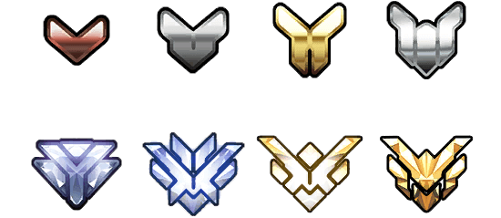

Játékmódok
Alap játékmenet
Az Overwatch egy kifejezetten csapat-alapú FPS, ahol a pályákon 2 csapat 6-6 játékosa mérkőzik meg a másik csapattal. A meccsek alatt a játékos által elért gyilkosságokat, asszisztálásokat és gyógyításokat a rendszer a meccs végén – a közvetlen tapasztalati pontok (experience point) mellett – bronz (bronze), ezüst (silver) és arany (gold) medálokkal is jutalmazhatja, amelyek további tapasztalati pontokat jelentenek. Amikor pedig a játékos elér egy bizonyos mennyiségű tapasztalati pontot, szintet lép, amely nemcsak játékbeli tapasztalatát szimbolizálja, hanem egyes játékmódok eléréséhez is szükséges, illetve jutalmul egy zsákmánydobozt is kap. Az említett medálok a következő képen láthatóak:
Játékmódok leírása
Az Overwatchban két típusú játékmód van; a mesterséges intelligencia (M.I.) és más játékosokkal szemben. Utóbbi esetben van lehetőség normál, illetve rangsorolt meccsek elindítására is, viszont pár módtól eltekintve egyikben se választhatja két vagy több játékos ugyanazt a hőst. Értelemszerűen a gép elleni játék kevesebb tapasztalati pontot jelent, ezért kezdő játékosoknak ajánlott, hogy kiismerjék a játékmechanikát és a szerepkörök használatát.
| Mód neve | Leírás |
|---|---|
| Gyors játék | Ebben a módban a játékos szintjéhez, illetve statisztikai eredményeihez igazodva hozz össze a rendszer más játékosokkal, véletlenszerű pályatípusú és pályájú meccsekhez. |
| Árkád | Egyedi játékmód, ahol heti limittel ugyan, de minden harmadik győzelemmel egy zsákmány dobozt szerezhet a játékos. Több további mód érhető el benne, amelyek napi szinten változnak |
| Öldöklés | Ebben a módban nincsenek csapatok, így tehát mindenki mindenki ellen harcol. Az győz, aki először éri el a 20 gyilkosságot (kill). |
| Szerezd meg a zászlót | Ebben a módban 2 teljes csapat versenyzik azért, hogy megszerezze a másik "bázisán" lévő zászlót, majd azt elvigye a saját zászlójukhoz. Az a csapat győz, amely előbb visz el három ellenséges zászlót illetve az időlimit lejárta előtt a legtöbbet. Döntetlen helyzetben nincs győztes. |
| Kiesés | Ebben a módban 2 csapat három fős tagjai csapnak össze, és az a csapat győz, aki háromszor legyőzi a másikat. Lehet választani hősöket, de nincs újraéledés, és nincsenek gyógycsomagok sem. |
| Kizárásos kiesés | Ugyanaz, mint a fenti játékmód, csak a győztes csapat a következő körben már nem használhatja ugyanazt a hős függetlenül attól, hogy melyik játékos játszott vele. |
| Kompetetív játék | Ez a rangsorolt játék, amely csak akkor érhető el, ha a játékos eléri a 25. szintet és lejátszik 10 helyezési meccset. Szezonokra van felosztva, több tucatnyi rang érhető el (bronz, ezüst, arany, stb), és minél magasabb rangon áll a játékos, annál több, ú.n. "kompetitív pontot" (competitive point) szerezhet, amelyből a hősök fegyvereinek (vagy fegyverzeteinek) aranyszínű verzióit lehet megvásárolni (lásd: "Játékon belüli jutalmazás" fejezet). A rangsorolt játékban a meccsek több fordulóból állnak, és az egyes célok megszerzésével is ilyen pontokat lehet gyűjteni. |